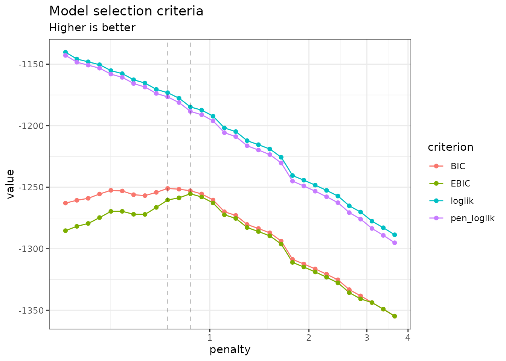
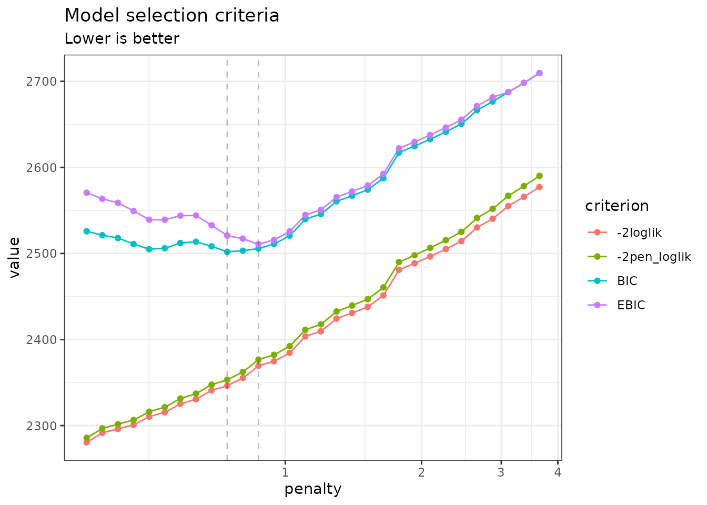
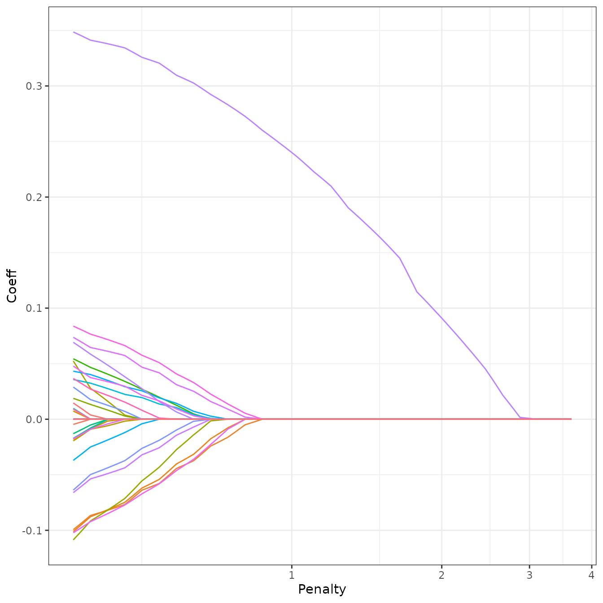
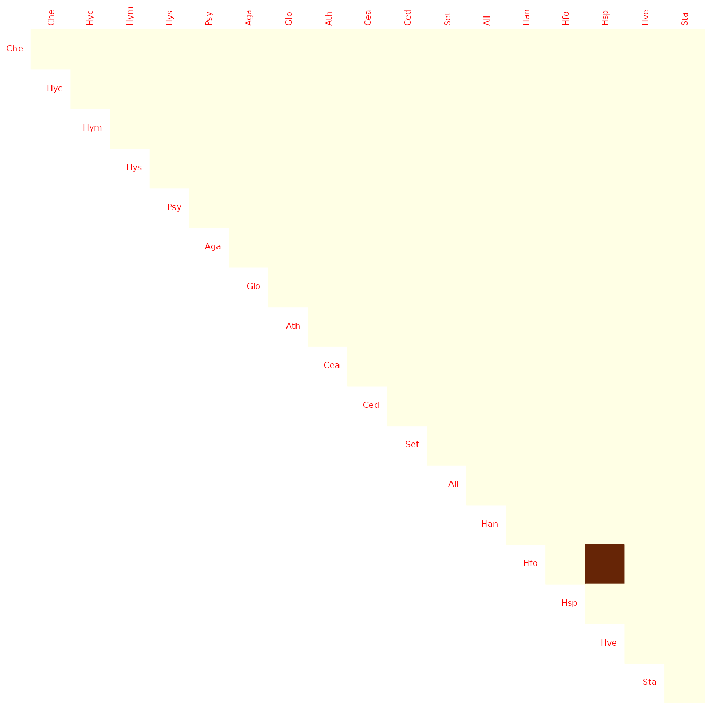

Sparse structure estimation for multivariate count data with PLN-network
PLN team
2023-01-01
Source:vignettes/PLNnetwork.Rmd
PLNnetwork.RmdPreliminaries
This vignette illustrates the standard use of the
PLNnetwork function and the methods accompanying the R6
Classes PLNnetworkfamily and
PLNnetworkfit.
Requirements
The packages required for the analysis are PLNmodels plus some others for data manipulation and representation:
Data set
We illustrate our point with the trichoptera data set, a full description of which can be found in the corresponding vignette. Data preparation is also detailed in the specific vignette.
data(trichoptera)
trichoptera <- prepare_data(trichoptera$Abundance, trichoptera$Covariate)The trichoptera data frame stores a matrix of counts
(trichoptera$Abundance), a matrix of offsets
(trichoptera$Offset) and some vectors of covariates
(trichoptera$Wind, trichoptera$Temperature,
etc.)
Mathematical background
The network model for multivariate count data that we introduce in Chiquet, Robin, and Mariadassou (2019) is a variant of the Poisson Lognormal model of Aitchison and Ho (1989), see the PLN vignette as a reminder. Compare to the standard PLN model we add a sparsity constraint on the inverse covariance matrix \({\boldsymbol\Sigma}^{-1}\triangleq \boldsymbol\Omega\) by means of the \(\ell_1\)-norm, such that \(\|\boldsymbol\Omega\|_1 < c\). PLN-network is the equivalent of the sparse multivariate Gaussian model (Banerjee, Ghaoui, and d’Aspremont 2008) in the PLN framework. It relates some \(p\)-dimensional observation vectors \(\mathbf{Y}_i\) to some \(p\)-dimensional vectors of Gaussian latent variables \(\mathbf{Z}_i\) as follows \[\begin{equation} \begin{array}{rcl} \text{latent space } & \mathbf{Z}_i \sim \mathcal{N}\left({\boldsymbol\mu},\boldsymbol\Omega^{-1}\right) & \|\boldsymbol\Omega\|_1 < c \\ \text{observation space } & Y_{ij} | Z_{ij} \quad \text{indep.} & Y_{ij} | Z_{ij} \sim \mathcal{P}\left(\exp\{Z_{ij}\}\right) \end{array} \end{equation}\]
The parameter \({\boldsymbol\mu}\) corresponds to the main effects and the latent covariance matrix \(\boldsymbol\Sigma\) describes the underlying structure of dependence between the \(p\) variables.
The \(\ell_1\)-penalty on \(\boldsymbol\Omega\) induces sparsity and selection of important direct relationships between entities. Hence, the support of \(\boldsymbol\Omega\) correspond to a network of underlying interactions. The sparsity level (\(c\) in the above mathematical model), which corresponds to the number of edges in the network, is controlled by a penalty parameter in the optimization process sometimes referred to as \(\lambda\). All mathematical details can be found in Chiquet, Robin, and Mariadassou (2019).
Covariates and offsets
Just like PLN, PLN-network generalizes to a formulation close to a multivariate generalized linear model where the main effect is due to a linear combination of \(d\) covariates \(\mathbf{x}_i\) and to a vector \(\mathbf{o}_i\) of \(p\) offsets in sample \(i\). The latent layer then reads \[\begin{equation} \mathbf{Z}_i \sim \mathcal{N}\left({\mathbf{o}_i + \mathbf{x}_i^\top\mathbf{B}},\boldsymbol\Omega^{-1}\right), \qquad \|\boldsymbol\Omega\|_1 < c , \end{equation}\] where \(\mathbf{B}\) is a \(d\times p\) matrix of regression parameters.
Alternating optimization
Regularization via sparsification of \(\boldsymbol\Omega\) and visualization of the consecutive network is the main objective in PLN-network. To reach this goal, we need to first estimate the model parameters. Inference in PLN-network focuses on the regression parameters \(\mathbf{B}\) and the inverse covariance \(\boldsymbol\Omega\). Technically speaking, we adopt a variational strategy to approximate the \(\ell_1\)-penalized log-likelihood function and optimize the consecutive sparse variational surrogate with an optimization scheme that alternates between two step
- a gradient-ascent-step, performed with the CCSA algorithm of Svanberg (2002) implemented in the C++ library (Johnson 2011), which we link to the package.
- a penalized log-likelihood step, performed with the graphical-Lasso of Friedman, Hastie, and Tibshirani (2008), implemented in the package fastglasso (Sustik and Calderhead 2012).
More technical details can be found in Chiquet, Robin, and Mariadassou (2019)
Analysis of trichoptera data with a PLNnetwork model
In the package, the sparse PLN-network model is adjusted with the
function PLNnetwork, which we review in this section. This
function adjusts the model for a series of value of the penalty
parameter controlling the number of edges in the network. It then
provides a collection of objects with class PLNnetworkfit,
corresponding to networks with different levels of density, all stored
in an object with class PLNnetworkfamily.
Adjusting a collection of network - a.k.a. a regularization path
PLNnetwork finds an hopefully appropriate set of
penalties on its own. This set can be controlled by the user, but use it
with care and check details in ?PLNnetwork. The collection
of models is fitted as follows:
network_models <- PLNnetwork(Abundance ~ 1 + offset(log(Offset)), data = trichoptera)##
## Initialization...
## Adjusting 30 PLN with sparse inverse covariance estimation
## Joint optimization alternating gradient descent and graphical-lasso
## sparsifying penalty = 3.662141
sparsifying penalty = 3.382613
sparsifying penalty = 3.124421
sparsifying penalty = 2.885937
sparsifying penalty = 2.665656
sparsifying penalty = 2.462189
sparsifying penalty = 2.274252
sparsifying penalty = 2.10066
sparsifying penalty = 1.940319
sparsifying penalty = 1.792216
sparsifying penalty = 1.655417
sparsifying penalty = 1.529061
sparsifying penalty = 1.412349
sparsifying penalty = 1.304546
sparsifying penalty = 1.204971
sparsifying penalty = 1.112996
sparsifying penalty = 1.028042
sparsifying penalty = 0.9495727
sparsifying penalty = 0.8770926
sparsifying penalty = 0.8101449
sparsifying penalty = 0.7483072
sparsifying penalty = 0.6911896
sparsifying penalty = 0.6384317
sparsifying penalty = 0.5897007
sparsifying penalty = 0.5446894
sparsifying penalty = 0.5031137
sparsifying penalty = 0.4647115
sparsifying penalty = 0.4292404
sparsifying penalty = 0.3964769
sparsifying penalty = 0.3662141
## Post-treatments
## DONE!Note the use of the formula object to specify the model,
similar to the one used in the function PLN.
Structure of PLNnetworkfamily
The network_models variable is an R6 object
with class PLNnetworkfamily, which comes with a couple of
methods. The most basic is the show/print method, which
sends a very basic summary of the estimation process:
network_models## --------------------------------------------------------
## COLLECTION OF 30 POISSON LOGNORMAL MODELS
## --------------------------------------------------------
## Task: Network Inference
## ========================================================
## - 30 penalties considered: from 0.3662141 to 3.662141
## - Best model (greater BIC): lambda = 1.41
## - Best model (greater EBIC): lambda = 1.41One can also easily access the successive values of the criteria in the collection
| param | nb_param | loglik | BIC | ICL | n_edges | EBIC | pen_loglik | density | stability |
|---|---|---|---|---|---|---|---|---|---|
| 3.662141 | 17 | -1294.006 | -1327.087 | -2799.444 | 0 | -1327.087 | -1300.255 | 0.0000000 | NA |
| 3.382613 | 17 | -1288.492 | -1321.573 | -2793.931 | 0 | -1321.573 | -1294.480 | 0.0000000 | NA |
| 3.124421 | 17 | -1283.330 | -1316.411 | -2788.769 | 0 | -1316.411 | -1289.064 | 0.0000000 | NA |
| 2.885937 | 18 | -1278.367 | -1313.393 | -2785.751 | 1 | -1315.850 | -1283.857 | 0.0069204 | NA |
| 2.665656 | 18 | -1273.602 | -1308.628 | -2780.986 | 1 | -1311.085 | -1278.860 | 0.0069204 | NA |
| 2.462189 | 18 | -1269.140 | -1304.167 | -2776.525 | 1 | -1306.623 | -1274.172 | 0.0069204 | NA |
A diagnostic of the optimization process is available via the
convergence field:
| param | nb_param | status | backend | iterations | objective | convergence | outer_iterations | |
|---|---|---|---|---|---|---|---|---|
| out | 3.662141 | 17 | 4 | nlopt | 6 | 1300.254515 | 0.000000 | 19.000000 |
| elt | 3.382613 | 17 | 4 | nlopt | 21 | 1294.480031 | 0.000000 | 3.000000 |
| elt.1 | 3.124421 | 17 | 4 | nlopt | 15 | 1289.063593 | 0.000000 | 3.000000 |
| elt.2 | 2.885937 | 18 | 4 | nlopt | 16 | 1283.857114 | 0.000000 | 3.000000 |
| elt.3 | 2.665656 | 18 | 4 | nlopt | 15 | 1278.859958 | 0.000000 | 3.000000 |
| elt.4 | 2.462189 | 18 | 4 | nlopt | 15 | 1274.172114 | 0.000000 | 3.000000 |
An nicer view of this output comes with the option “diagnostic” in
the plot method:
plot(network_models, "diagnostic")
Exploring the path of networks
By default, the plot method of
PLNnetworkfamily displays evolution of the criteria
mentioned above, and is a good starting point for model selection:
plot(network_models)
Note that we use the original definition of the BIC/ICL criterion
(\(\texttt{loglik} -
\frac{1}{2}\texttt{pen}\)), which is on the same scale as the
log-likelihood. A popular
alternative consists in using \(-2\texttt{loglik} + \texttt{pen}\) instead.
You can do so by specifying reverse = TRUE:
plot(network_models, reverse = TRUE)
In this case, the variational lower bound of the log-likelihood is
hopefully strictly increasing (or rather decreasing if using
reverse = TRUE) with a lower level of penalty (meaning more
edges in the network). The same holds true for the penalized counterpart
of the variational surrogate. Generally, smoothness of these criteria is
a good sanity check of optimization process. BIC and its
extended-version high-dimensional version EBIC are classically used for
selecting the correct amount of penalization with sparse estimator like
the one used by PLN-network. However, we will consider later a more
robust albeit more computationally intensive strategy to chose the
appropriate number of edges in the network.
To pursue the analysis, we can represent the coefficient path (i.e.,
value of the edges in the network according to the penalty level) to see
if some edges clearly come off. An alternative and more intuitive view
consists in plotting the values of the partial correlations along the
path, which can be obtained with the options corr = TRUE.
To this end, we provide the S3 function
coefficient_path:
coefficient_path(network_models, corr = TRUE) %>%
ggplot(aes(x = Penalty, y = Coeff, group = Edge, colour = Edge)) +
geom_line(show.legend = FALSE) + coord_trans(x="log10") + theme_bw()
Model selection issue: choosing a network
To select a network with a specific level of penalty, one uses the
getModel(lambda) S3 method. We can also extract the best
model according to the BIC or EBIC with the method
getBestModel().
model_pen <- getModel(network_models, network_models$penalties[20]) # give some sparsity
model_BIC <- getBestModel(network_models, "BIC") # if no criteria is specified, the best BIC is usedAn alternative strategy is to use StARS (Liu, Roeder, and Wasserman 2010), which performs resampling to evaluate the robustness of the network along the path of solutions in a similar fashion as the stability selection approach of Meinshausen and Bühlmann (2010), but in a network inference context.
Resampling can be computationally demanding but is easily
parallelized: the function stability_selection integrates
some features of the future package to perform parallel
computing. We set our plan to speed the process by relying on 2
workers:
We first invoke stability_selection explicitly for
pedagogical purpose. In this case, we need to build our sub-samples
manually:
n <- nrow(trichoptera)
subs <- replicate(10, sample.int(n, size = n/2), simplify = FALSE)
stability_selection(network_models, subsamples = subs)##
## Stability Selection for PLNnetwork:
## subsampling: ++++++++++Requesting ‘StARS’ in gestBestmodel automatically
invokes stability_selection with 20 sub-samples, if it has
not yet been run.
model_StARS <- getBestModel(network_models, "StARS")When “StARS” is requested for the first time,
getBestModel automatically calls the method
stability_selection with the default parameters. After the
first call, the stability path is available from the plot
function:
plot(network_models, "stability")
When you are done, do not forget to get back to the standard sequential plan with future.
future::plan("sequential")Structure of a PLNnetworkfit
The variables model_BIC, model_StARS and
model_pen are other R6Class objects with class
PLNnetworkfit. They all inherits from the class
PLNfit and thus own all its methods, with a couple of
specific one, mostly for network visualization purposes. Most fields and
methods are recalled when such an object is printed:
model_StARS## Poisson Lognormal with sparse inverse covariance (penalty = 2.27)
## ==================================================================
## nb_param loglik BIC ICL n_edges EBIC pen_loglik density
## 18 -1264.965 -1299.991 -2772.349 1 -1302.447 -1269.776 0.007
## ==================================================================
## * Useful fields
## $model_par, $latent, $latent_pos, $var_par, $optim_par
## $loglik, $BIC, $ICL, $loglik_vec, $nb_param, $criteria
## * Useful S3 methods
## print(), coef(), sigma(), vcov(), fitted()
## predict(), predict_cond(), standard_error()
## * Additional fields for sparse network
## $EBIC, $density, $penalty
## * Additional S3 methods for network
## plot.PLNnetworkfit()The plot method provides a quick representation of the
inferred network, with various options (either as a matrix, a graph, and
always send back the plotted object invisibly if users needs to perform
additional analyses).
my_graph <- plot(model_StARS, plot = FALSE)
my_graph## IGRAPH 31fadcb UNW- 17 1 --
## + attr: name (v/c), label (v/c), label.cex (v/n), size (v/n),
## | label.color (v/c), frame.color (v/l), weight (e/n), color (e/c),
## | width (e/n)
## + edge from 31fadcb (vertex names):
## [1] Hfo--Hsp
plot(model_StARS)
plot(model_StARS, type = "support", output = "corrplot")
We can finally check that the fitted value of the counts – even with sparse regularization of the covariance matrix – are close to the observed ones:
data.frame(
fitted = as.vector(fitted(model_StARS)),
observed = as.vector(trichoptera$Abundance)
) %>%
ggplot(aes(x = observed, y = fitted)) +
geom_point(size = .5, alpha =.25 ) +
scale_x_log10(limits = c(1,1000)) +
scale_y_log10(limits = c(1,1000)) +
theme_bw() + annotation_logticks()fitted value vs. observation